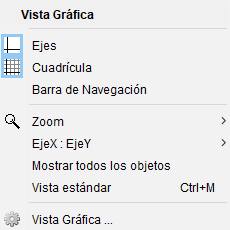
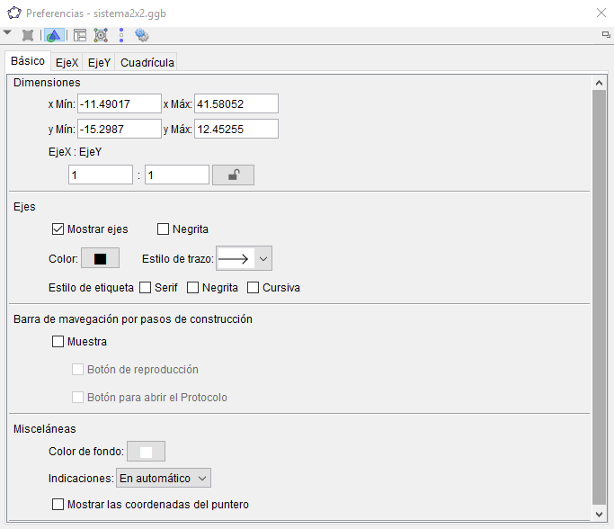
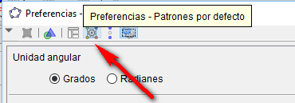
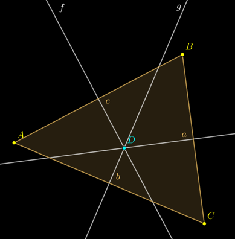
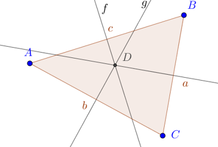

Personalización del entorno
Es sencillo cambiar la apariencia de los objetos de Geogebra. Por ejemplo, que los puntos se vean más gordotes. Igualmente, se pueden mostrar u ocultar los ejes, la cuadrícula y el color de fondo.
¿Cómo se personaliza?
Los ejes y la cuadrícula en la vista gráfica se pueden mostrar y ocultar a voluntad, sin más que desplegando el menú con el botón derecho del ratón:

Además, si en dicho menú entramos en «Vista gráfica...» podremos elegir el color de fondo, entre otras cosas, como la relación entre los ejes:

Por otro lado, el color y el grosor de los objetos también puede modificarse, bien individualmente una vez creados, bien en los patrones por defecto.

Ejemplos
Fondo oscuro
Un ejemplo de personalización, con el fondo oscuro y las líneas y puntos algo más gordotes. Además, la fuente de las letras es también más grande y más elegante. Puede venir bien para su visualización web o incluso en la pizarra virtual, especialmente si hay poca luz ambiental.

Fondo claro
Un ejemplo de fondo claro, pero con algún detalle modificado, como el rótulo de los objetos.
